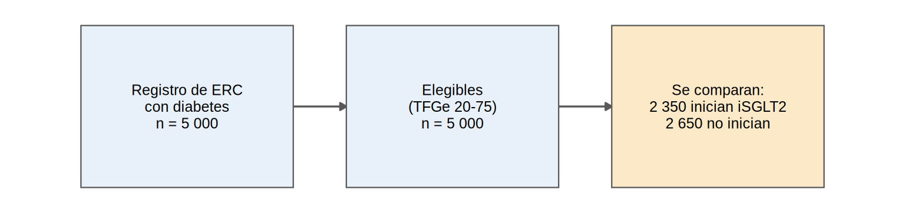
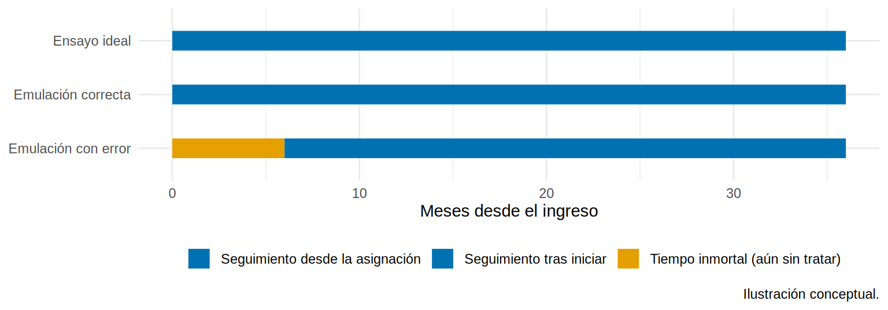

Primero el protocolo: emular un ensayo objetivo
Tu servicio quiere saber si iniciar un iSGLT2 enlentece la pérdida de TFGe en pacientes con ERC G3-G4 y diabetes. No existe un ensayo aleatorizado en tus pacientes, pero sí un registro de 5 000 (simulados). Antes de abrir R, hazte una pregunta incómoda: ¿qué ensayo habrías hecho si hubieras podido?
Piensa en un plano antes de construir. Un estudio observacional sin protocolo es una obra sin plano: puede quedar en pie, pero nadie sabe dónde están las grietas. El ensayo objetivo (target trial) es ese plano: escribes el ECA ideal y luego compruebas cuánto de él puedes reproducir con tus datos. Cada diferencia es una fuente de sesgo que debes reconocer (los sesgos de tiempo inmortal, selección e indicación del Cap. 10 se evitan por diseño, no por corrección posterior).
Lo que vamos a hacer
- Escribir el protocolo del ensayo ideal en siete elementos y compararlo con
ckd_isglt2. - Fijar bien el tiempo cero (el error más caro de los estudios observacionales).
- Decidir qué efecto queremos estimar: ATE, ATT o ATU, y conocer su valor verdadero.
Paso 1: escribe el protocolo (siete elementos)
Cada fila responde una pregunta que un ECA responde por diseño y que, en un estudio observacional, tú debes responder por escrito:
| Elemento | Ensayo ideal | Emulación con ckd_isglt2
|
|---|---|---|
| 1. Elegibilidad | Adultos con ERC G3-G4, diabetes tipo 2, sin iSGLT2 previo | Los mismos criterios: la base ya los cumple (TFGe 20-75) |
| 2. Estrategias | (a) Iniciar iSGLT2 al ingreso; (b) no iniciar |
isglt2 = 1 vs. isglt2 = 0 en la visita basal |
| 3. Asignación | Aleatoria | Observacional: se emula ajustando por confusores basales |
| 4. Tiempo cero | Aleatorización = inicio del seguimiento | Visita basal: elegibilidad, asignación y seguimiento coinciden |
| 5. Desenlaces | Pendiente anual de TFGe; evento renal compuesto a 36 meses |
pendiente_tfg; evento y tiempo_meses
|
| 6. Contraste causal | Efecto de iniciar (ITT) y/o de mantener (per protocolo) | Efecto promedio (ATE) de iniciar vs. no iniciar |
| 7. Plan de análisis | ITT ajustado por estratificación | PS, emparejamiento, IPW, fórmula g, AIPW |
Los elementos 3 y 6 son donde la emulación no puede igualar al ECA, y el resto del capítulo trata de ellos.
Paso 2: aplica la elegibilidad y cuéntalo
En una base real, el primer trabajo es filtrar con código y registrar cuántos pacientes quedan tras cada criterio (un diagrama similar al CONSORT). Aquí la base ya viene filtrada, pero así se vería:
n_total <- nrow(ckd)
n_eleg <- sum(between(ckd$tfg_basal, 20, 75))
n_trat <- sum(ckd$isglt2 == 1)
diagrama_flujo(c(
paste0("Registro de ERC\ncon diabetes\nn = ", miles(n_total)),
paste0("Elegibles\n(TFGe 20-75)\nn = ", miles(n_eleg)),
paste0("Se comparan:\n", miles(n_trat), " inician iSGLT2\n", miles(n_total - n_trat), " no inician")), resaltar = 3)
Qué vemos: los 5 000 pacientes son elegibles y se reparten en 2 350 que inician el fármaco y 2 650 que no. Esos dos grupos son las dos “ramas” del ensayo que queremos emular.
Paso 3: alinea el tiempo cero
La regla central: en el tiempo cero deben coincidir tres cosas: (1) el paciente cumple la elegibilidad, (2) se le asigna una estrategia y (3) empieza el seguimiento. Si el tratamiento se asigna después de empezar a contar el tiempo, el paciente tiene un periodo en el que no puede tener el evento (si lo hubiera tenido, no habría llegado a recibir el fármaco): es el tiempo inmortal (10.2). Si el seguimiento empieza antes de la elegibilidad, aparece sesgo de selección.
linea <- tribble(
~diseno, ~inicio, ~fin, ~tipo,
"Ensayo ideal", 0, 36, "Seguimiento desde la asignación",
"Emulación correcta", 0, 36, "Seguimiento desde la asignación",
"Emulación con error", 0, 6, "Tiempo inmortal (aún sin tratar)",
"Emulación con error", 6, 36, "Seguimiento tras iniciar"
) |> mutate(diseno = fct_inorder(diseno))
ggplot(linea) +
geom_segment(aes(x = inicio, xend = fin, y = fct_rev(diseno), yend = fct_rev(diseno), color = tipo), linewidth = 6) +
scale_color_manual(values = c("Seguimiento desde la asignación" = "#0072B2", "Seguimiento tras iniciar" = "#0072B2",
"Tiempo inmortal (aún sin tratar)" = "#E69F00"), name = NULL) +
labs(x = "Meses desde el ingreso", y = NULL, caption = "Ilustración conceptual.") +
theme_minimal(base_size = 11) + theme(legend.position = "bottom")
Qué vemos: en la fila de abajo, los 6 primeros meses (naranja) son tiempo “regalado” al grupo tratado: sobrevivir esos meses era requisito para ser clasificado como tratado. Eso hace que el fármaco parezca más protector de lo que es.
Con tratamientos que se inician en distintos momentos (lo habitual en registros) se emula una secuencia de ensayos: cada mes se toman los pacientes elegibles, se separa a quienes inician del resto y se sigue a ambos desde ese mes (ensayos anidados; clone-censor-weight si la estrategia es mantener el fármaco, Cap. 19). En ckd_isglt2 el tratamiento ya está definido en la visita basal, como en un único ensayo.
Paso 4: decide qué efecto quieres estimar
“El efecto del fármaco” no es una sola cosa. Según a quién se lo apliques, cambia:
- ATE: ¿qué pasaría si toda la población elegible lo iniciara? (política de salud).
- ATT: ¿qué ganaron los que sí lo iniciaron? (evaluar lo que se hizo).
- ATU: ¿qué ganarían los que hoy no lo reciben? (ampliar el uso).
Como la base es simulada, el oráculo nos deja calcular los tres valores verdaderos, y también las diferencias de riesgo a 36 meses:
dif_riesgo <- oraculo$evento_36m_1 - oraculo$evento_36m_0
verdad <- tibble(
estimando = c("ATE", "ATT", "ATU"),
pendiente = c(mean(oraculo$ite), mean(oraculo$ite[oraculo$isglt2 == 1]), mean(oraculo$ite[oraculo$isglt2 == 0])),
dif_riesgo_36m = c(mean(dif_riesgo), mean(dif_riesgo[oraculo$isglt2 == 1]), mean(dif_riesgo[oraculo$isglt2 == 0]))
)
verdad |> mutate(across(where(is.numeric), \(x) round(x, 3)))# A tibble: 3 × 3
estimando pendiente dif_riesgo_36m
<chr> <dbl> <dbl>
1 ATE 0.928 -0.045
2 ATT 1.06 -0.04
3 ATU 0.81 -0.05 Qué vemos: el ATT (1.06) > ATE (0.93) > ATU (0.81). Los que recibieron el fármaco son los que más se benefician (tienen más albuminuria, y el efecto crece con la albuminuria). Cada método de este capítulo apunta a uno u otro:
- Emparejamiento 1:1 por PS: ATT.
- IPW con pesos ATE: ATE; con pesos ATT: ATT.
- Fórmula g (estandarización): ATE, ATT o ATU, según a quién estandarices.
- Regresión ajustada sin interacciones: aproximadamente el ATE, solo si el efecto es homogéneo.
- Aleatorización: se sustituye por intercambiabilidad condicional, un supuesto que no se puede verificar.
- Ceguera: médicos y pacientes saben quién recibe qué (sesgos de detección y de ejecución).
- Cumplimiento: aquí solo sabemos que “inició”. El efecto de mantener el fármaco exige métodos para tratamientos que cambian en el tiempo (Cap. 19).
- Primero el protocolo, luego el análisis: elegibilidad, estrategias, asignación, tiempo cero, desenlaces, contraste y plan.
- En el tiempo cero coinciden elegibilidad, asignación e inicio del seguimiento; si no, aparece tiempo inmortal o sesgo de selección.
- Elige el estimando (ATE, ATT o ATU) según la decisión clínica; cada método apunta a uno distinto.
- Toda desviación del ensayo ideal es una posible fuente de sesgo: decláralas.
Ejercicio
- Escribe el protocolo del ensayo objetivo (los 7 elementos) para una pregunta de tu servicio: ¿reduce el uso de IECA la mortalidad en pacientes en hemodiálisis?
- Para pacientes que inician diálisis y reciben un fármaco después, ¿dónde fijarías el tiempo cero? ¿Qué sesgo aparece si lo fijas en el diagnóstico de ERC?
- Con el oráculo, calcula el riesgo relativo a 36 meses verdadero (ATE) y compáralo con el del ATT.